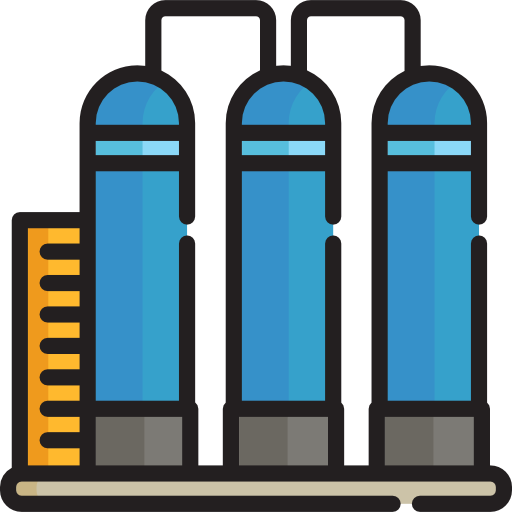
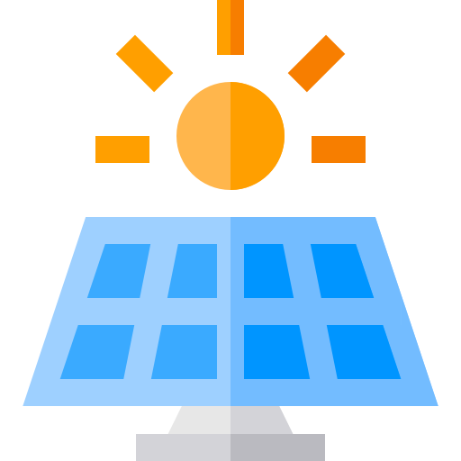
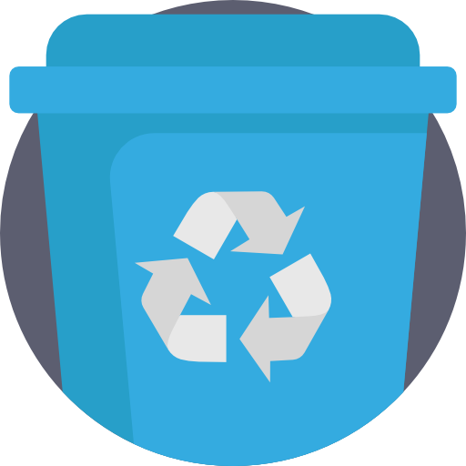

Projetos

Construção de hortas
Implantação de hortas tanto particulares com comunitárias afim de diminuir o custo alimentar como também melhorar a qualidade da alimentação.

Cisternas
As cisternas caseiras serão implantadas com o objetivo de diminuir o consumo de água tratada.

Painel solar
Visando a economia eletrica, as placas solares fornecem uma grande economia nas despesas.

Reciclagem
A reciclagem apresenta uma gama muito ampla de possibilidades, como artesanato, reaproveitamento, fonte de renda.